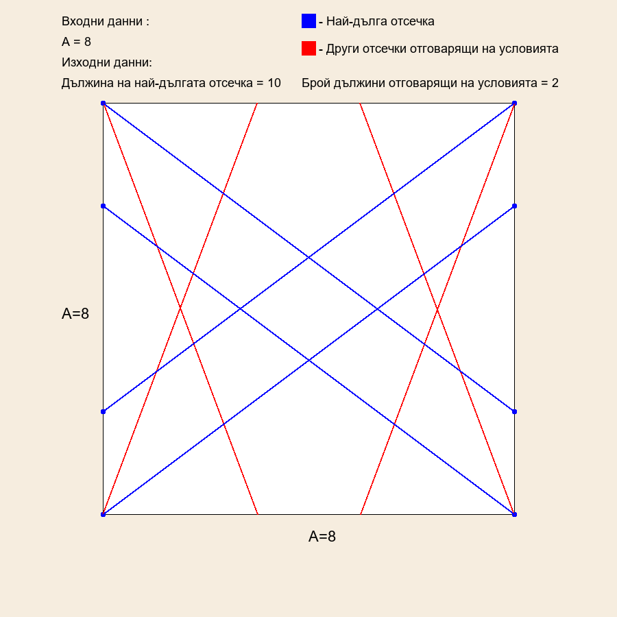

Square Task
Условие:
Разглеждаме точките с целочислени координати ( x y, ) , намиращи се в квадрата,
определен с неравенствата 0 ≤ ≤ x A, 0 ≤ ≤ y A, където A е дадено цяло число.
Разглеждаме всички отсечки, които:
• не са хоризонтални и не са вертикални;
• имат дължина, равна на положително цяло число;
• имат крайни точки с целочислени координати в разглеждания квадрат.
Напишете програма square, която намира:
• отсечката с най-голяма дължина, измежду описаните;
• броя на всички цели положителни числа, които са дължини на отсечки от
описания вид.
